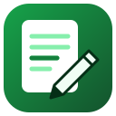

Writing Desk privacy policy
Effective October 6, 2026
Writing Desk is a Chrome extension by Kevin Fitzgerald. It does not collect your data. There is no account, no analytics and no server of ours: what you save stays in your browser on this computer.
What it keeps on your computer
- Readability: your settings (target grade, which highlights to show, reading speed)
- Spell check: the words you add to your dictionary, with Pro per-site dictionaries (the site's name and its words), your language
- Word count: your reading and speaking speeds and, with Pro, your word and character goals (never the text it counts)
- Snippets: your snippets (abbreviation, name, text, folder), the sites you turned them on for (host names only), typing settings and how often each snippet was used
- AI prompts: your prompts (title, text, folder, tags, favorite, how often you used each)
- Change case: your Title Case style, word lists and language (never the text it converts)
- Glossary: your glossaries and terms (source and target terms, notes, context, status, client name and tags)
- Post drafts: your drafts and their folders, saved hashtag sets and which previews you chose
- Email signature: your signatures (the name, title, contact details, links and pictures you enter)
- Your license key, if you buy Pro
This lives in the browser's own extension storage. Removing the extension deletes it.
Network
Writing Desk never sends your writing, your snippets, prompts, glossaries, drafts or the pages you check anywhere: no account, no server, no AI, no analytics. Everything is checked and stored in your browser. On the sites you turn Snippets on for, it looks only at the few characters just typed before the caret, to spot an abbreviation. The signature preview loads the picture addresses you type (like any web page showing an image). The only other request is checking a Pro license key with Gumroad, when you activate it and every two weeks.
Pro purchases
Pro is sold by Gumroad, which handles the payment and emails your license key. Gumroad's own privacy policy covers that purchase. When you activate a key, Writing Desk sends the key and Writing Desk's Gumroad product ID to Gumroad's license server (api.gumroad.com) to check it, and checks it again about every two weeks. Nothing else is sent.
Permissions
- activeTab: Gives Writing Desk access to the current tab only when the user clicks its toolbar button, presses one of its shortcuts or picks “Change case” from the right-click menu, so the tool they choose can work on that one page: Readability and Word count read the selection, the text box they're writing in or the article; Spell check reads the page's visible text; Change case converts the selected text; Snippets, AI prompts and Glossary type into the text box they last clicked.
- scripting: After the user starts a tool, runs that tool's own code in the tab: Readability's highlights and results panel, Spell check's underlines (CSS Highlight API, the page isn't changed), Word count's counting (and the Pro live counter), Change case's in-place edit (undo still works), and a one-time function that inserts a snippet, prompt or glossary term. Snippets also registers its expansion script for each site the user turns on, and removes it when they turn the site off. Nothing runs on a page before the user asks.
- storage: Keeps each tool's settings and the user's own writing aids on this computer: readability settings; personal and per-site spelling dictionaries; reading and speaking speeds and goals; snippets, the sites they're turned on for and use counts; prompts with folders and tags; title-case style and word lists; glossaries; post drafts and hashtag sets; email signatures; and the Pro license.
- sidePanel: Lets the user keep Writing Desk open in Chrome's side panel next to the page they're writing in, for example to insert prompts or glossary terms, or to draft a post.
- contextMenus: Adds a “Change case” item to the right-click menu, shown only when right-clicking inside a text box or editor.
- http://*/*, https://*/* (optional): Never granted at install. Asked for one site at a time, only when the user turns on Snippets' typed expansion for that site (“Turn on for this site”), so abbreviations typed there expand. Turning the site off gives the access back; every granted site is listed and removable on the settings page.
- clipboardRead (optional): Asked for only when the user saves or uses a snippet containing {clipboard}, or ticks “Allow {clipboard}”. The clipboard is read only at the moment such a snippet expands.
- https://api.gumroad.com/* (optional): Asked for only when the user activates a Pro license key, to check the key.
- api.gumroad.com (asked only when you activate a key): to check your Pro license key.
Sharing and selling
Nothing is sold or shared. No data is used for advertising, credit or lending.
Children
Writing Desk isn't directed at children under 13 and collects nothing from anyone.